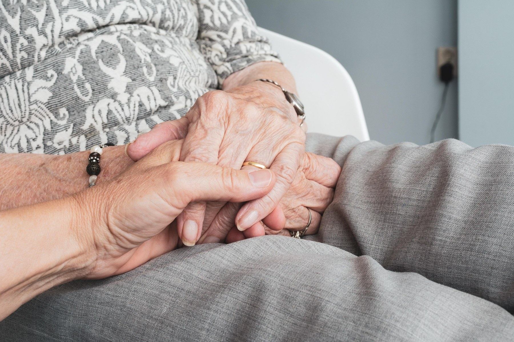
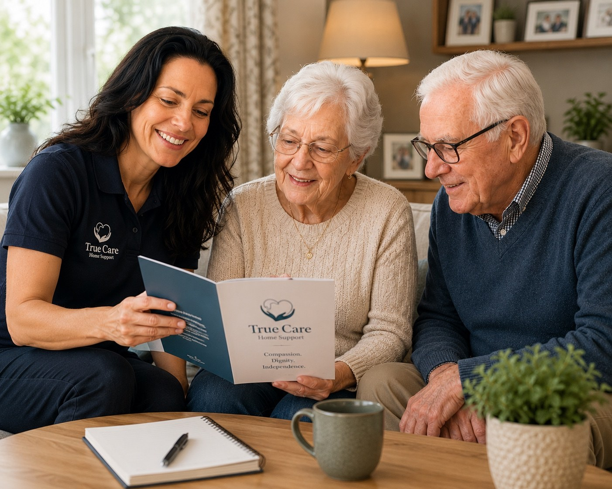
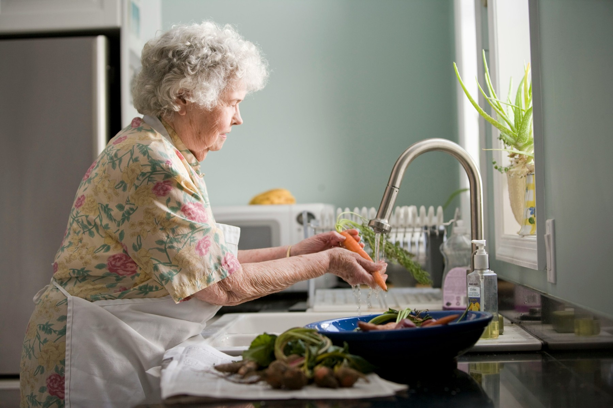
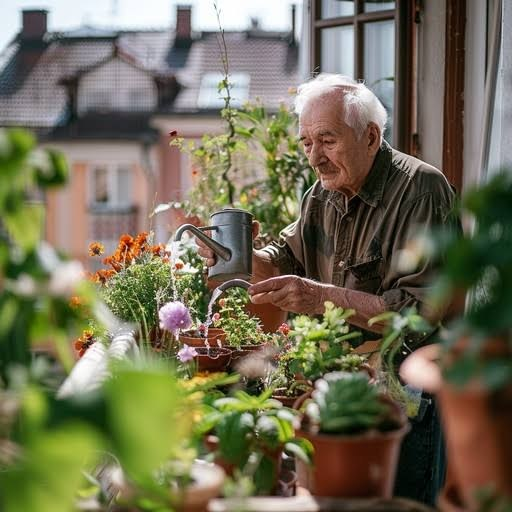

Kind, dependable support at home
Helping older people live safely, confidently and independently at home with warm, non-medical support families can trust.
Swansea • Port Talbot • Neath • Surrounding areas
Enhanced
DBS checked Fully
insured Local &
independent
DBS checked Fully
insured Local &
independent

We can help with:
Shopping & Errands

Meal Preparation
Household Help

Garden Support
Appointments & Transport
For Families
Support you can trust when you can’t always be there
Our visits provide reassurance, companionship and practical help so older people can remain independent at home for longer.
Learn More